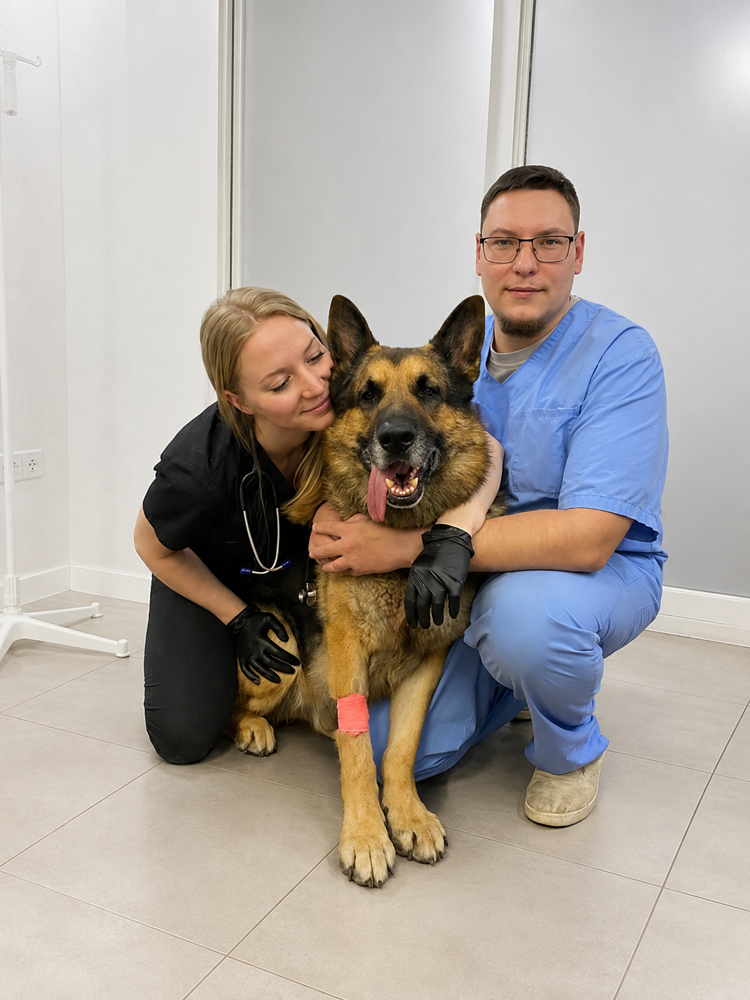
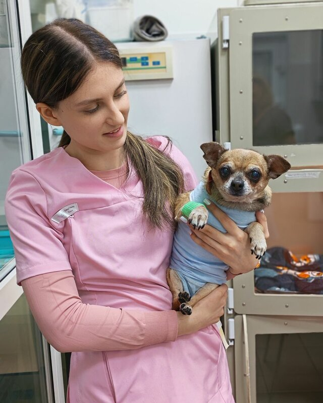
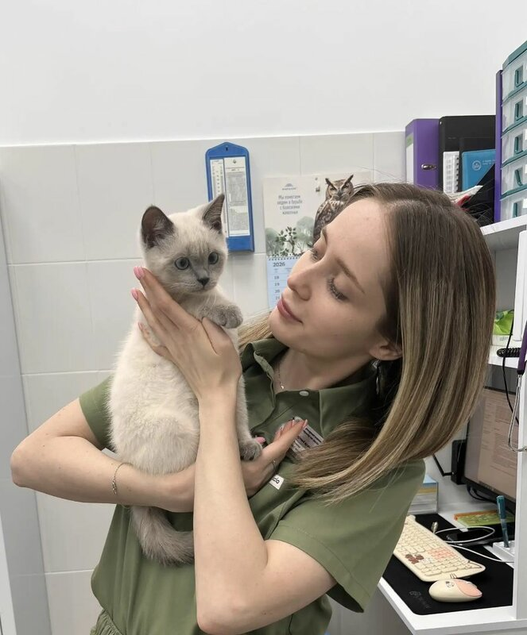
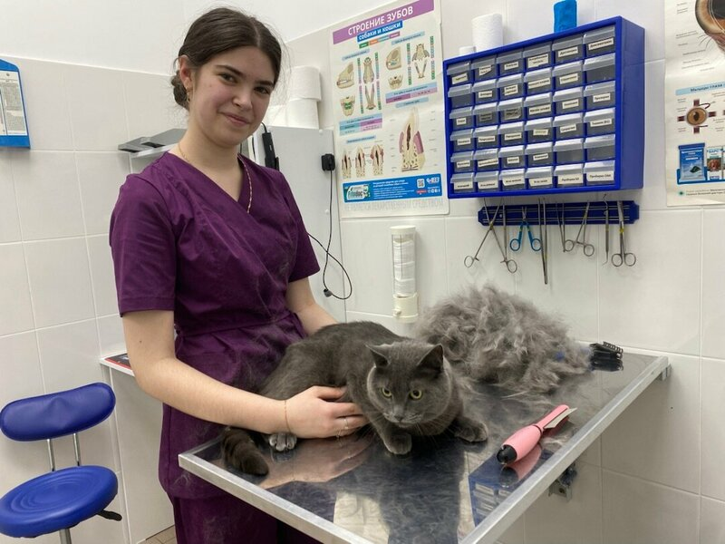
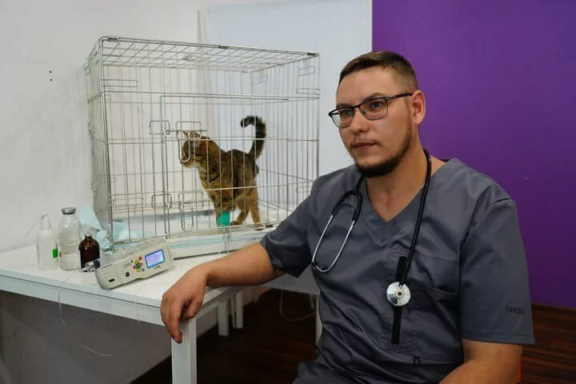

«Ветврач Илья очень любит животных, это чувствуется сразу — настоящий „доктор Айболит“. Профессионал: на глаз определил проблему, которая подтвердилась по анализам. И цены не кусаются. Будем ходить теперь только к нему».
Ирина П.Раменское, Красноармейская, 13Б
Ветеринарная клиника в Раменском
Ветеринарная помощь в городе Раменское: прием, диагностика, вакцинация, хирургия, стоматология и восстановление животных в клинике рядом с домом.

Запись на прием
г. Раменское, ул. Красноармейская, д. 13Б
Приемосмотр животного и понятные рекомендации по дальнейшим действиям
Диагностикаисследования и процедуры по показаниям после очной оценки состояния
Хирургияплановые и срочные направления с подготовкой и контролем восстановления
Профилактикавакцинация, чипирование, консультации по уходу и здоровью питомца

Немного о нас
Ветеринарная клиника в Раменском
Ветеринарная клиника «Ветеринар на связи» осуществляет лечение и реабилитацию самых разнообразных животных и предлагает широкий спектр ветеринарных услуг.
Клиника работает в г. Раменское, Раменском районе и близлежащих городах. В основе работы — ответственное отношение, опыт персонала, современные подходы к диагностике и лечению, любовь к животным и уважение к владельцам.
- Очный прием и понятные рекомендации владельцу
- Диагностика, лечебные процедуры и хирургические направления
- Адрес: г. Раменское, ул. Красноармейская, д. 13Б
Основные услуги клиники
Выберите нужное направление или откройте полный список услуг, чтобы заранее сориентироваться перед визитом.

Диагностика
Осмотр, первичная оценка состояния и направление на дополнительные исследования по показаниям.

Вакцинация
Профилактические визиты, консультации, вакцинация и чипирование животных.

Стерилизация и кастрация
Подготовка, операция и рекомендации по восстановлению после вмешательства.

Хирургия
Хирургические направления и процедуры после очной оценки состояния животного.

Стоматология
Осмотр ротовой полости, санация, удаление зубного камня и лечение по показаниям.

Чипирование
Идентификация питомца и консультация по документам, вакцинации и профилактике.
Фотогалерея





Отзывы о нас
Направления клиники
Специализированная помощь по основным ветеринарным направлениям.
Контакты
Запишитесь на приём
Оставьте контакты — администратор перезвонит и подскажет. Мы находимся: г. Раменское, ул. Красноармейская, д. 13Б.
Нужна помощь питомцу?
Позвоните в клинику, опишите ситуацию администратору и уточните ближайшее удобное время приема.